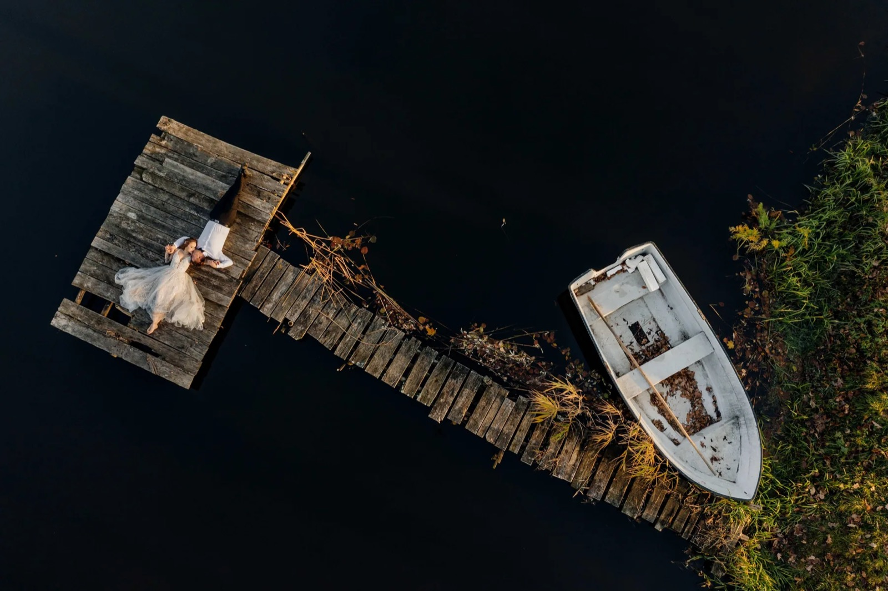

Zakładka: wesela i eventy
Wesela i eventy z drona
Serce ułożone z gości, para na pomoście, przelot FPV przez salę. Ujęcia, które goście oglądają po kilka razy.
Co nagrywamy
Dron łączymy z reportażem foto i filmem, więc całość ma jeden styl.
- Serce z gości i samochodówWspólne ujęcie weselne ustawiane z powietrza.
- Plener pary z góryJeziora, łąki, parki i architektura w tle.
- Dron 4K i FPV AvataSzerokie ujęcia oraz dynamiczne przeloty, także przez salę.
- Kamera 360Dodatkowa perspektywa z GoPro Max.
- Komunie, studniówki, jubileuszeUjęcia z powietrza także na inne uroczystości.
Realizacje
Ujęcia z wesel i sesji
Wybrane kadry z drona z realizacji na pawelstec.eu.
Masz miejsce do pokazania z góry?
Napisz, gdzie i kiedy. Sprawdzimy strefę lotu i przygotujemy wycenę.